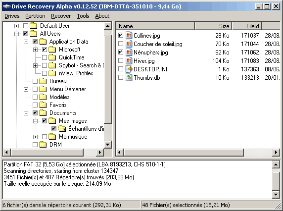

La fenêtre principale de l'application est composée de
plusieurs
zones distinctes :
La zone arborescence:
contient l'arborescence des répertoires trouvés lors
d'une analyse de la partition, précédés d'une case
à cocher pour la sélection.
La zone fichiers:
contient la liste des fichiers contenus dans le répertoire
sélectionné dans l'arborescence,
précédés d'une case à cocher pour la
sélection.
La zone de messages:
C'est là que s'affichent les messages et warnings de
l'application.
La barre d'état:
Affiche des informations sur les opérations en cours.

La fenêtre peut être redimensionnée ainsi que les
zones à l'aide des sépatateurs.
La démarche pour récupérer des fichiers est la
suivante: